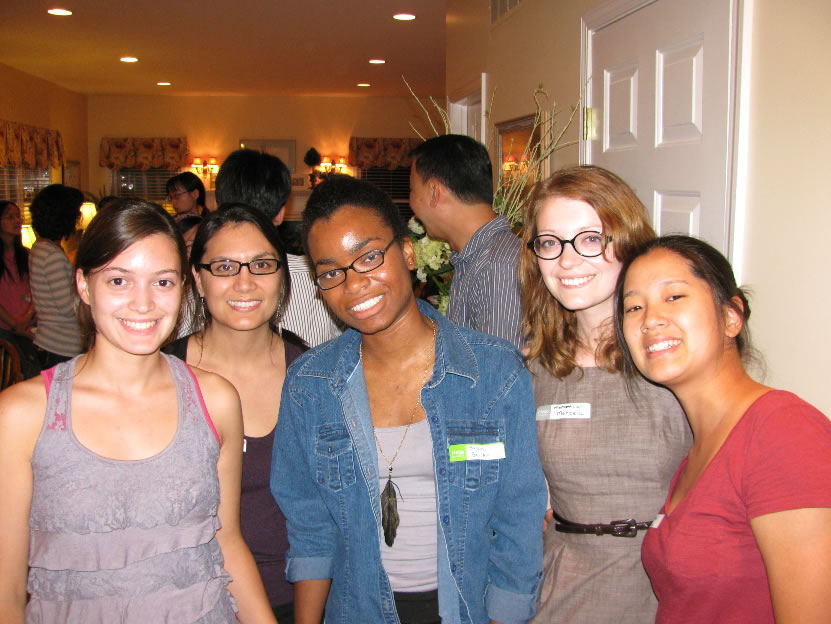
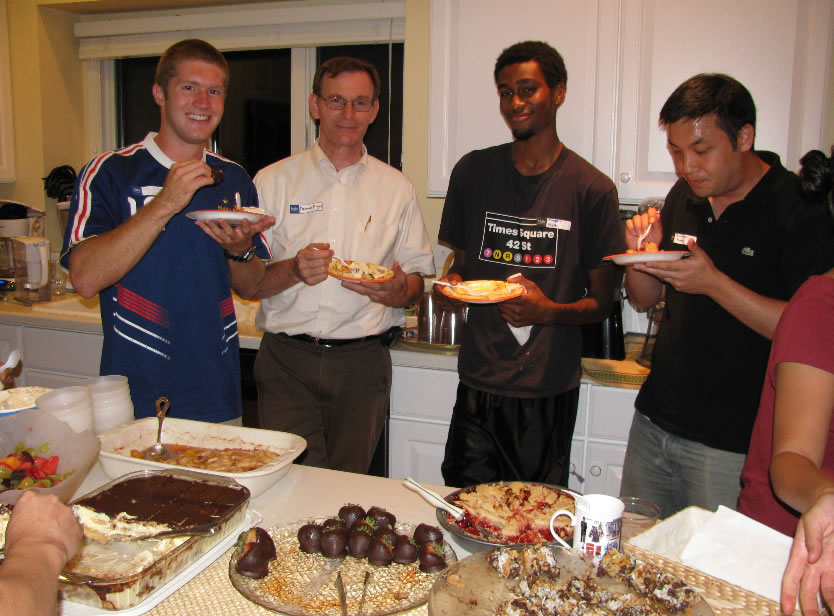
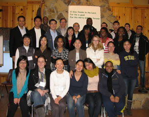
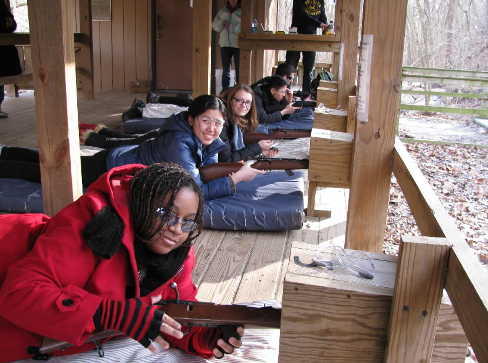
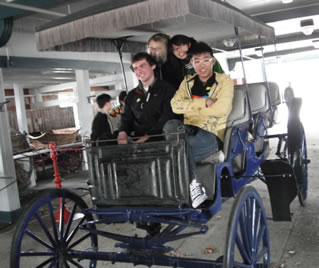
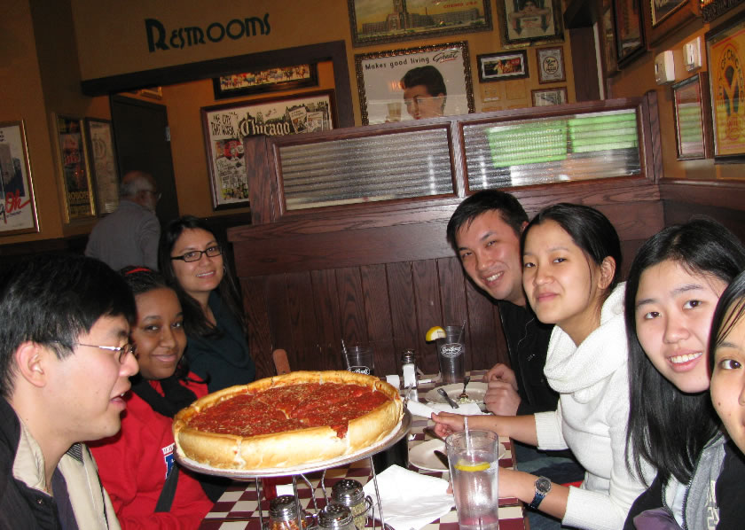

"TASTE AND SEE THAT THE LORD IS GOOD" (PSALMS 34:8)
Welcome Dinners
We usually hold welcome dinners in the beginning of each semester to welcome the new students who are joining us. This is a time for the new members to get to know Christians on Campus and what we are all about. It is also a time for the students to get to know the local families who care for all of us. We would give a short presentation about Christians on Campus and we would have a wonderful dinner together. This is a great opportunity to get to know one another to pursue God together.
 
College Conferences and Retreats
We have two college conferences per year, one in the fall and one in the spring, where Christian students from Michigan, Ohio, Indiana, and Kentucky come together to pursue God together and testify Jesus as our Lord. All rivalry between the schools are forgotten because of the joy of the Lord that is in us. It is wonderful to be with so many college students from many different backgrounds and just loving the Lord Jesus together. The colleges represented include University of Michigan, Wayne State, Michigan State, Western Michigan, Eastern Michigan, Grand Valley State, Ohio State, Wright State, Case Western, Purdue, University of Indiana, Univeristy of Kentucky, and University of Louisville. Past conference topics include "Christ our Life, our Joy, and our Pursuit", "To Reveal His Son in Me", "The Gospel", etc. The fall college conference is usually held at Fairborn, OH, and the spring college conference is usually held at Columbus, OH.
We also have a winter retreat at Camp Tecumseh in Indiana also with many college students from the midwest region. This is also a time of enjoying Christ with fellow students in the area. Along with mesages given by some Christian brothers, there are a number of activities include archery, riflery, rock climbing, etc.
 
Spring Break Trips
Each year we have a student trip during the spring break. We travel to different places for a week of adventure and discovery. We often also visit Christian believers in each city we visit and they warmly welcome us with hospitality. In the past we have gone to Chicago, Boston, New York, and Lexington. This is a wonderful week of fun getaway and especially wonderful to get a glimps of a vision of the Body of Christ by being with so many Christians from different places.
 
End of Semester Celebration Meetings
Near the end of each semester, we have a celebration dinner and meeting to celebrate a semester of many experiences of Christ. We also celebrate our graduating students and bless them for their continual going on with God wherever He may lead them in their lives.